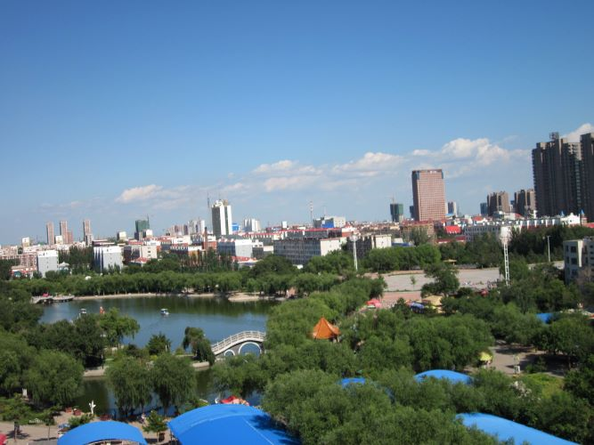
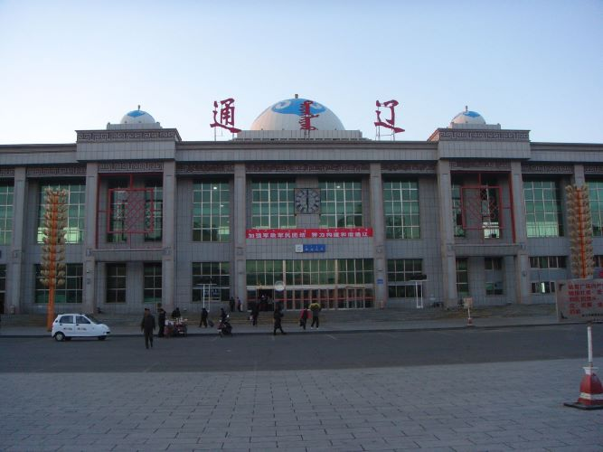
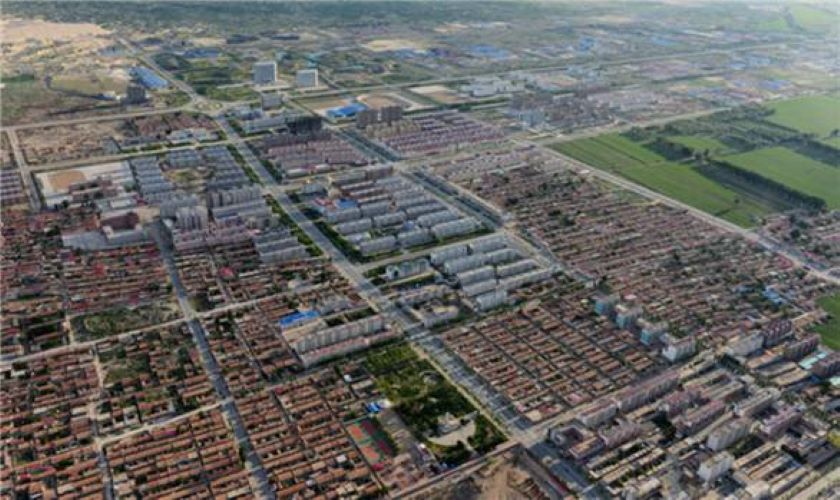

通辽市位于内蒙古自治区东部、松辽平原西端，属中国东北地区。
通辽市的前身为哲里木盟，始建于清朝崇德元年。通辽市土质肥
沃、水草丰美，野生动物繁多，有国家一级保护动物丹顶鹤、白
鹳、鸨、梅花鹿、紫貂，同时也是国家重要的畜牧业生产基地，
被誉为"黄牛之乡"。通辽比较知名的景点有大青沟、珠日河草原、
阿古拉草原、奈曼王府、扎鲁特草原、特金罕山等。通辽市，是
内蒙古自治区的9个地级市之一，驻地科尔沁区。通辽市东靠吉林
省四平市，西接赤峰市、锡林郭勒盟，南依辽宁省沈阳市、阜新
市、铁岭市，北边与兴安盟以及吉林省白城市、松原市为邻；地
处中纬度，属中温带、干旱和半干旱、大陆性季风气候；下辖1个
市辖区、1个县级市、1个县、5个旗；总面积59835平方千米；
2017年总人口316.36万人。
 |  | 
|